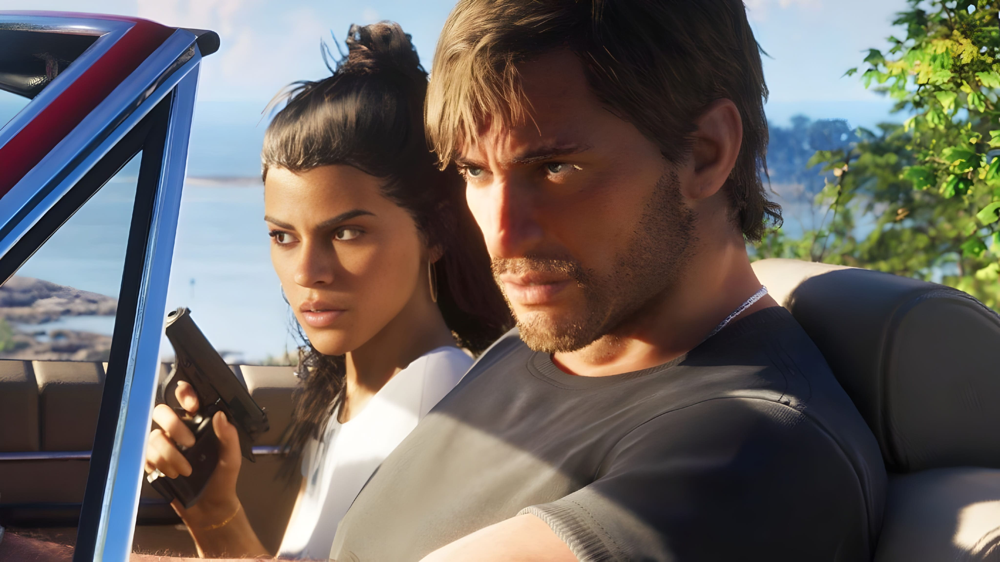
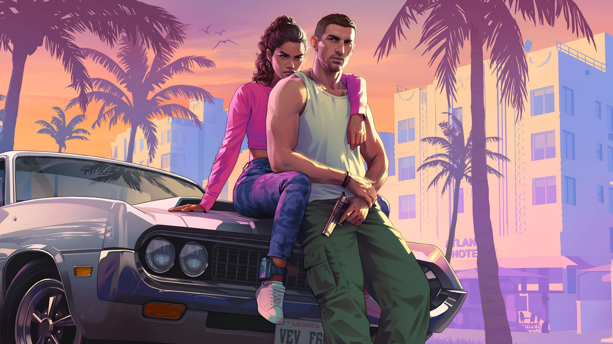
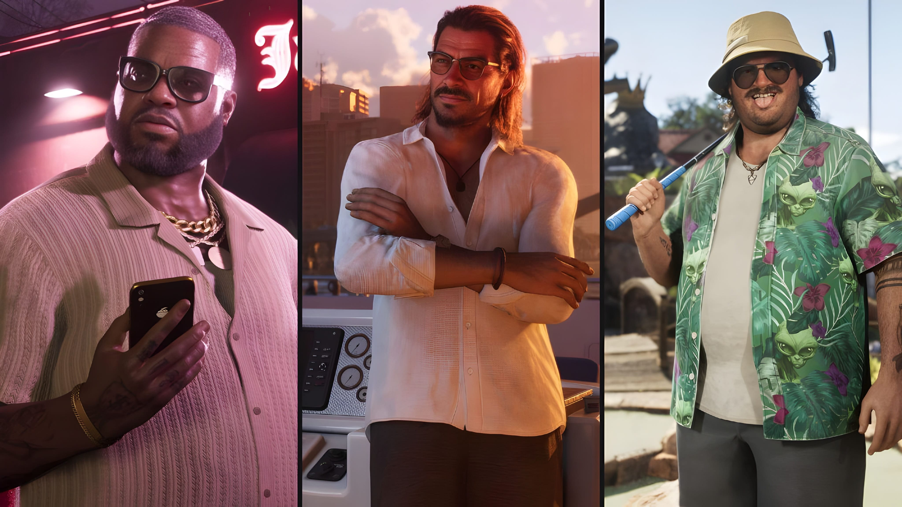
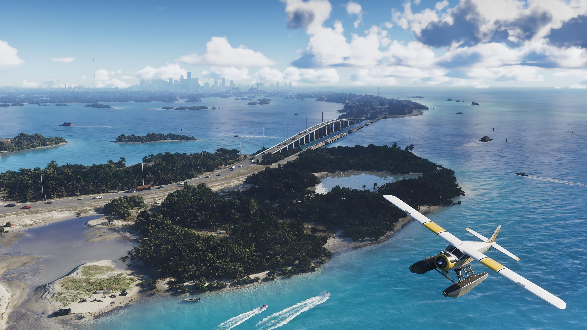
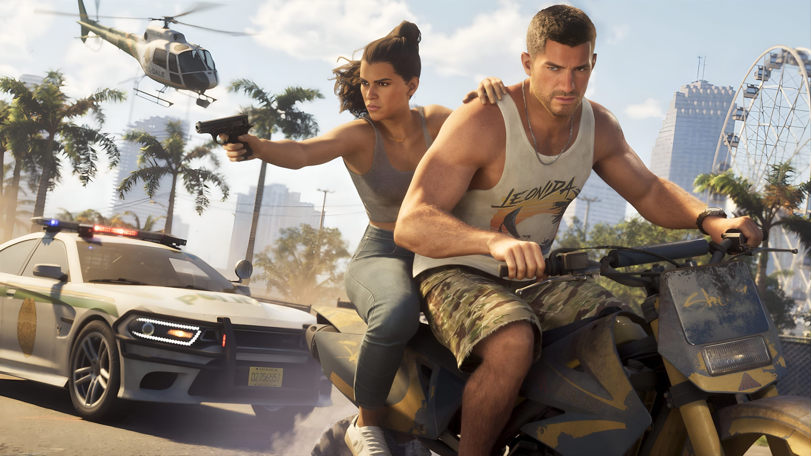
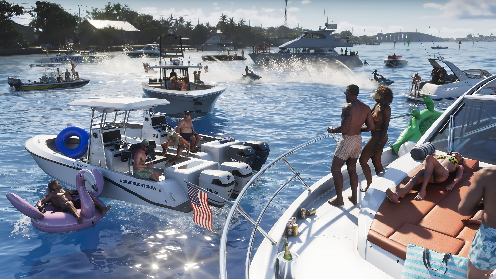
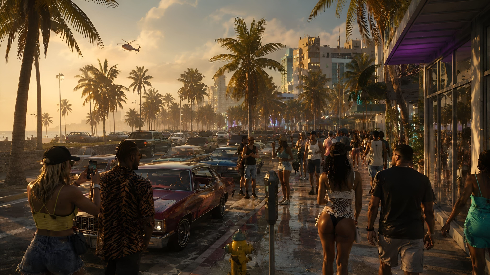
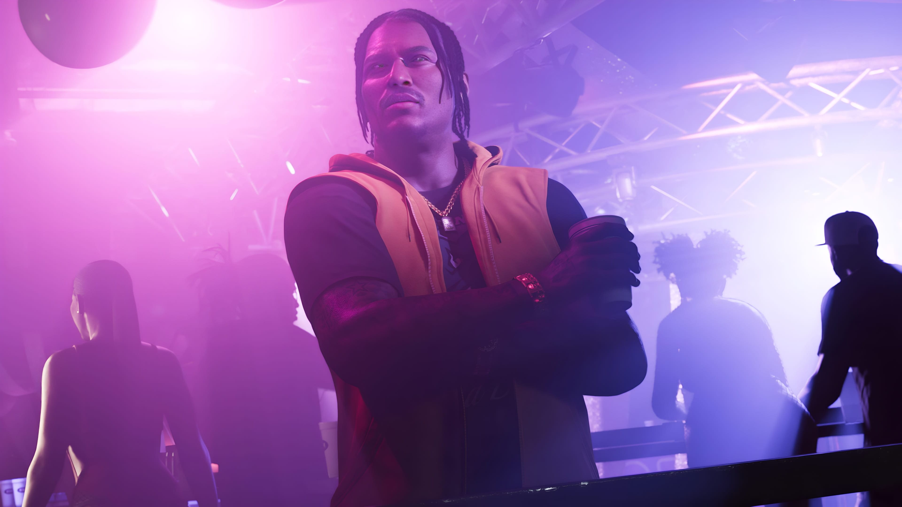
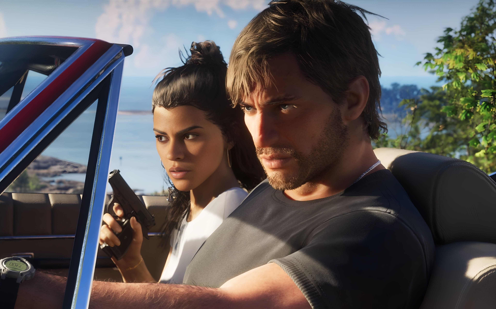
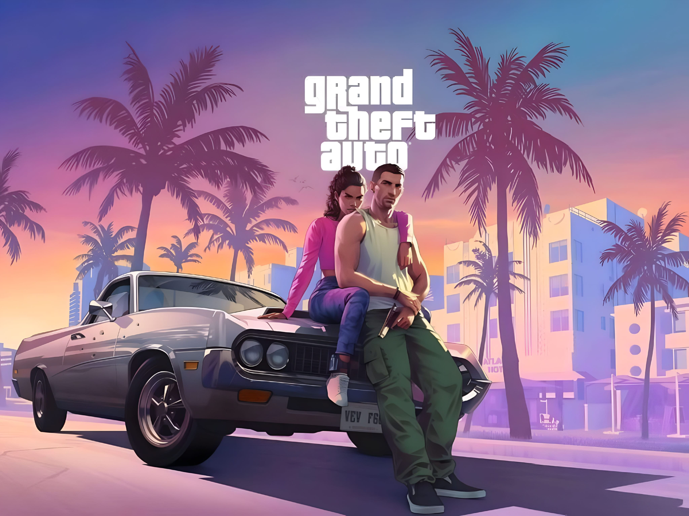

Grand Theft Auto VI (GTA 6) is the next main entry in Rockstar Games' open-world action-adventure series. The game takes players to Leonida, a fictional state inspired by the southeastern United States, and brings the series back to a modern version of Vice City. Its story follows two central characters, Jason Duval and Lucia Caminos, whose lives become connected through a dangerous criminal situation.
Rockstar Games currently lists November 19, 2026 as the release date for PlayStation 5 and Xbox Series X|S. This guide brings together the information Rockstar has officially shared about the setting, characters, gameplay presentation, platforms, and release. It also explains what is not yet confirmed, especially for players waiting for a PC version.
What Is GTA 6?
GTA 6 is an open-world action-adventure game developed and published by Rockstar Games. It is the latest main-series Grand Theft Auto title and follows the huge success of Grand Theft Auto V. Like earlier games in the series, it is built around a fictional world where players can follow a central story while exploring cities, roads, and surrounding areas.
The new setting is the state of Leonida, with Vice City as one of its major locations. Rockstar's official material presents a contemporary setting rather than a return to the 1980s period used by the original Grand Theft Auto: Vice City. The new game is designed around a different cast and a new story.
- Game: Grand Theft Auto VI
- Common name: GTA 6 or GTA VI
- Developer and publisher: Rockstar Games
- Genre: Open-world action-adventure
- Setting: The fictional state of Leonida
- Announced launch platforms: PlayStation 5 and Xbox Series X|S
- Listed release date: November 19, 2026
GTA 6 Story and Main Plot
The story centres on Jason Duval and Lucia Caminos. Rockstar's official introduction explains that the pair are already dealing with difficult circumstances when a plan that appears simple goes wrong. They become caught up in a wider criminal conspiracy across Leonida and must depend on one another as events become more dangerous.
This setup places the relationship between the two leads at the centre of the game's narrative. Their partnership is important to the story, but Rockstar has not publicly revealed every major plot event. For that reason, details about the full storyline, its ending, and the complete mission list should not be treated as known.
The trailers and official descriptions provide a starting point for understanding the game's tone and characters. They do not reveal the entire campaign, so players should be cautious about online posts that claim to explain unreleased story details.

Main Characters: Jason and Lucia
Rockstar has introduced Jason Duval and Lucia Caminos as the two central characters of GTA 6. Their backgrounds are different, but both have experience with difficult situations and crime. Their personal goals and decisions form an important part of the story.
Jason Duval
Jason grew up around people involved in scams and criminal activity. He later spent time in the Army, but eventually found himself working with local drug runners in the Keys. Rockstar's character description suggests that Jason is looking for a different direction, although meeting Lucia may make his future more complicated.
Lucia Caminos
Lucia learned to fight from an early age, with her father playing an important role in her upbringing. Her efforts to protect her family led to a prison sentence at the Leonida Penitentiary. After getting out, she is determined to improve her circumstances and make careful decisions about her future.
The official character material connects Lucia's hopes to the better life her mother wanted for the family. Her relationship with Jason becomes a major part of the direction she chooses after leaving prison.

Other Confirmed Characters
The world of GTA 6 includes several characters whose lives overlap with Jason and Lucia. Rockstar's official character pages have introduced people from different parts of Leonida, giving players a look at the groups and personalities surrounding the main pair.
- Cal Hampton: A friend of Jason and an associate of Brian. He is more comfortable at home and spends time following online activity and Coast Guard communications.
- Brian Heder: An experienced smuggler who operates through a boatyard in the Keys. Jason lives at one of his properties and helps with local work.
- Boobie Ike: A well-known Vice City figure with business interests in property, entertainment, and music.
- Dre'Quan Priest: A determined character whose ambitions are connected to the music business.
- Real Dimez: The music duo formed by Bae-Luxe and Roxy, who have known each other since school.
- Raul Bautista: An experienced bank robber who looks for people willing to take risks during criminal jobs.
These characters help establish the social and criminal world around the protagonists. Their exact roles in every mission and the full extent of their involvement will become clearer through the game itself.

GTA 6 Map and Locations
GTA 6 takes place in Leonida, a fictional state that includes the modern-day Vice City and a variety of areas beyond the main urban centre. Rockstar's official location descriptions show that the setting is not limited to city streets. It also includes coastal communities, wetlands, industrial areas, and rural landscapes.
Vice City
Vice City is the best-known location in the new setting. It is a modern version of the fictional city previously seen in Grand Theft Auto: Vice City. Its identity is connected to nightlife, beaches, busy neighbourhoods, tourism, and a large urban environment.
Other areas of Leonida
- Leonida Keys: A tropical island region with a relaxed coastal atmosphere and surrounding waters.
- Grassrivers: A wetland environment with mangroves and wildlife.
- Port Gellhorn: A coastal town described through its older tourist areas and changing local economy.
- Ambrosia: An industrial part of Leonida where manufacturing and a biker group are part of the local identity.
- Mount Kalaga: A natural area with forests and outdoor environments.
These official location descriptions suggest a varied setting, with different environments and communities to discover. However, an exact playable map size, full road network, and every accessible building have not been confirmed in the information used for this guide.

Gameplay and World Activities
GTA 6 is designed as an open-world experience in which the main story takes place across a large fictional state. The official trailers show scenes involving the protagonists, vehicles, public places, water, and different parts of the environment. These clips provide a preview of the game's presentation, but they do not reveal every playable activity or system.
The official material also shows a world influenced by modern media and public life. Social platforms, crowded public spaces, nightlife, and different local communities appear in the game's presentation. These details help establish the setting and its contemporary atmosphere.
It is useful to separate what appears in a trailer from what has been confirmed as a complete gameplay feature. A short scene may show an activity or event without proving how it works during normal play. We will avoid presenting unconfirmed trailer observations as guaranteed mechanics.

Vehicles, Wildlife and Exploration
The trailers and official screenshots show a range of transport and outdoor environments. Cars are a visible part of Vice City's streets, while watercraft and aircraft also appear in the game's promotional footage. These vehicles help communicate the variety of environments across Leonida.
The natural areas shown in official material include wetlands and coastal landscapes. Wildlife is also part of the visual identity of the setting, with animals appearing in promotional footage and screenshots. These details make the world feel different from a city-only environment.
Not every vehicle or animal shown in promotional material has a published list of playable interactions. Until Rockstar provides a full feature guide, specific claims about every vehicle type, animal behaviour, or side activity should be treated carefully.

Graphics and Visual Presentation
Rockstar's official extended look at GTA 6 was captured using in-game footage on PlayStation 5. It gives viewers a closer look at the game's environments, characters, lighting, and visual details. The footage shows a range of settings, from city streets and interiors to beaches and natural areas.
Visual quality is not only about character models. The presentation of buildings, vehicles, water, weather, lighting, and crowded locations all contribute to how convincing an open world feels. GTA 6's official material places attention on these different parts of the environment.
Actual performance can vary by platform and final game settings. Since Rockstar has not published PC specifications in the official platform information checked for this article, PC performance claims and benchmark figures cannot yet be verified.

Music, Radio and Audio
Music has long been an important part of the Grand Theft Auto experience. Radio stations help give each location its own character, while background music and sound design add atmosphere to missions and exploration.
Rockstar has published official GTA VI music and radio information, including material about in-game radio stations and the original score. The company has also announced an original score by Justice. Its official launch trailer features music connected to the game's soundtrack and score.
The complete listening experience may include licensed songs, radio programming, and original music. Track availability and station details should be checked against Rockstar's latest official music announcements rather than unofficial playlists or fan-made song lists.

GTA 6 PC Requirements: Minimum and Recommended Specs
Many PC players want to know whether their current computer will be able to run GTA 6. This is an important question, but there is a key limitation: Rockstar Games has not officially announced a PC version or published GTA 6 PC system requirements in the platform information checked for this article.
As a result, there are currently no verified minimum or recommended PC specifications to list. Any online table naming a specific processor, graphics card, RAM capacity, Windows version, or storage requirement should be treated as unconfirmed unless Rockstar publishes those details through an official channel.
Minimum system requirements
Not announced. Rockstar has not provided an official minimum CPU, GPU, RAM, operating system, or storage requirement for a PC release.
Recommended system requirements
Not announced. There is no official recommended PC configuration or confirmed performance target available from Rockstar in the sources checked for this article.
Will GTA 6 come to PC?
Rockstar's currently published platform information lists PlayStation 5 and Xbox Series X|S. It does not provide a confirmed PC release date. This means a PC launch should not be assumed or assigned a date until Rockstar makes an official announcement.
If you are planning to upgrade your computer specifically for GTA 6, it may be better to wait for official PC details. Buying hardware based on unofficial requirement lists could lead to unnecessary spending or a system that does not match the eventual release.

GTA 6 Release Date and Platforms
Rockstar Games currently lists November 19, 2026 as the release date for Grand Theft Auto VI. The announced platforms are PlayStation 5 and Xbox Series X|S. The release date and platform information can change only if Rockstar publishes a new official update, so readers should check the game's official page for the latest status.
Available launch platforms
- PlayStation 5: Listed by Rockstar as a launch platform.
- Xbox Series X|S: Listed by Rockstar as a launch platform.
- PC: No official PC release date or system requirements have been announced in the information checked for this article.
Pre-orders and editions
Rockstar's official support information describes Standard and Ultimate editions. The company also provides details about pre-order bonuses and the digital and physical purchase options. Edition contents and availability may differ by platform or region, so buyers should review the store listing for their own country before purchasing.
Rockstar's support page states that the physical version uses a download code inside the box rather than a game disc. It also explains the pre-load arrangements for supported platform purchases. Check the official support page for the latest instructions and regional details.

Frequently Asked Questions
When will GTA 6 be released?
Rockstar Games currently lists November 19, 2026 as the release date for Grand Theft Auto VI.
Which platforms will GTA 6 be available on?
The currently announced launch platforms are PlayStation 5 and Xbox Series X|S.
Will GTA 6 be available on PC?
Rockstar has not announced a PC version or a PC release date in the official platform information checked for this article. Players should wait for an announcement from Rockstar rather than relying on rumours.
What are the minimum PC requirements for GTA 6?
The official minimum PC requirements have not been published. No processor, graphics card, RAM, or storage specification can currently be confirmed as an official requirement.
Who are the main characters in GTA 6?
The two central characters are Jason Duval and Lucia Caminos.
Where does GTA 6 take place?
GTA 6 is set in the fictional state of Leonida and includes a modern version of Vice City.
Is GTA 6 a single-player game?
Rockstar describes Grand Theft Auto VI as a single-player experience. A separate GTA 6 online mode has not been confirmed in the official information cited in this guide.
Can I pre-load GTA 6?
Rockstar has published pre-load information for supported PlayStation 5 and Xbox Series X|S purchases. Check the official support instructions for the relevant platform and region.
Final Thoughts
Grand Theft Auto VI introduces a new story, two central characters, and a broad setting built around Leonida and modern Vice City. Rockstar's official material has already provided a look at the game's locations, supporting cast, music, and visual presentation. However, some important details about the full gameplay experience remain to be discovered.
For console players, the currently listed release date is November 19, 2026, with PlayStation 5 and Xbox Series X|S announced as launch platforms. PC players should keep an eye on Rockstar's official announcements because neither a PC release date nor system requirements have been confirmed in the sources checked for this article.
We will update this guide when Rockstar publishes new, verifiable information. For the most reliable announcements, visit the official GTA VI website and Rockstar Support.
Image Disclaimer
GTA 6 images belong to their respective copyright owners, including Rockstar Games. Zoon Labss does not claim ownership of these images. They are used for informational purposes only.
Official Sources and References
- Rockstar Games – Grand Theft Auto VI official website
- Rockstar Games – Characters and Leonida
- Rockstar Support – Platforms, editions, and versions
- Rockstar Newswire – GTA VI launch gallery
- Rockstar Games – GTA VI launch trailer and video library
- Rockstar Newswire – GTA VI: An Extended Look
Editorial note: This article is independently written by Zoon Labss. It is not affiliated with, endorsed by, or sponsored by Rockstar Games. Information was checked against official Rockstar sources available on November 12, 2026.